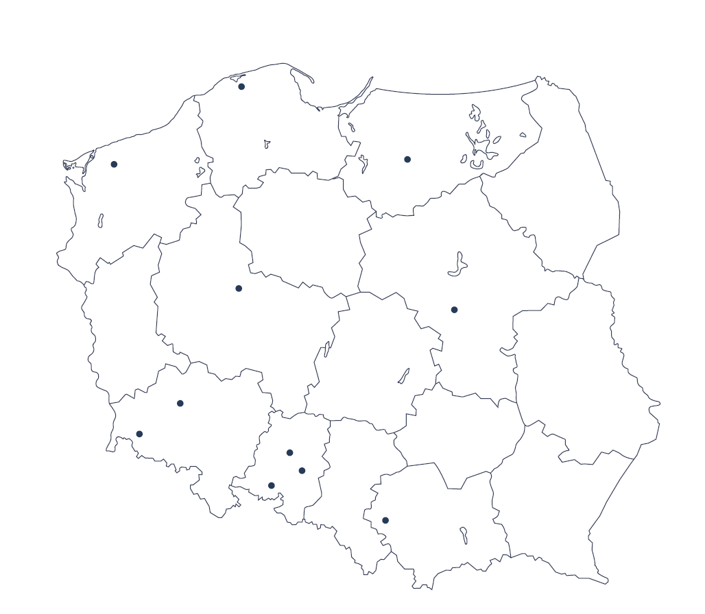

Powierz zarządzanie swojego domu seniora profesjonalnemu operatorowi i zyskaj spokój oraz pewność, że wszystkie aspekty funkcjonowania obiektu są w rękach ekspertów. Od rekrutacji i szkolenia personelu, przez skuteczny marketing i pozyskiwanie klientów, po codzienną administrację — zadbamy o każdy detal.
Umowa operatorska to porozumienie, w którym właściciel nieruchomości — takiej jak dom seniora — przekazuje zarządzanie obiektem wyspecjalizowanej firmie zwanej operatorem. W praktyce operator przejmuje codzienne obowiązki związane z funkcjonowaniem obiektu: rekrutację i zarządzanie personelem, marketing i pozyskiwanie klientów, obsługę administracyjną oraz utrzymanie techniczne.
Dzięki takiej współpracy właściciel nie musi martwić się o codzienne zarządzanie — operator przejmuje te obowiązki, posiadając w tym zakresie większe doświadczenie i zasoby. W zamian otrzymuje wynagrodzenie, ustalane na różne sposoby: jako stała kwota czynszu lub procent od zysków wygenerowanych przez obiekt.
Współpracujemy z domami seniora, DPS-ami i ośrodkami opiekuńczymi w całym kraju. Niezależnie od lokalizacji obiektu, zapewniamy ten sam standard zarządzania, technologii i wsparcia operacyjnego.
Sprawdź współpracę w Twoim regionie →
Porozmawiajmy na temat współpracy. Posiadasz dom seniora lub inną placówkę opiekuńczą, planujesz inwestycję albo zarządzasz obiektem w branży opiekuńczej? Zapraszamy na konsultację dotyczącą możliwości współpracy w zakresie usług operatorskich.
Konsultacja →